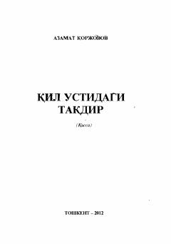

QUQimorbozlik va majburiy nikoh girdobida qolgan qizning achchiq taqdiri haqidagi qissa.
Azamat Qorjovovning ushbu qissasida qimor va yengil hayot ortidan keladigan baxtsizliklar, majburiy nikoh va ayollar taqdiri Lobar ismi qizning misolida ta'sirchan tarzda yoritib berilgan. Asar inson hayotiga xavf soluvchi illatlar va ularning achchiq oqibatlari haqida hikoya qiladi.